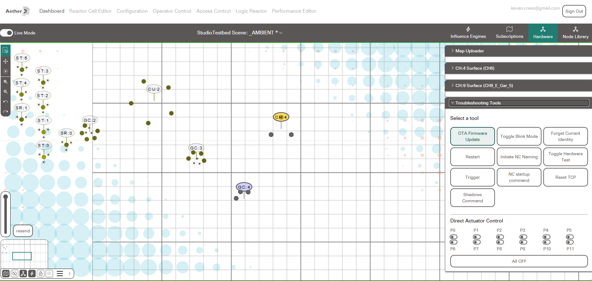

Editing Aether¶
Introduction¶
For more advanced use, users may want to access and edit Aether's source code, to create new Influence Engines, or new Logic Reactor Blocks.
With Raspberry Pi Image¶
- Connect to the Raspberry Pi with VSCode Remote (using the same password as SSH)
- Open the testbed-v4 folder
- Open a terminal.
Building WASM's and Firmware¶
Note
If you are using the latest Rapsberry Pi Image, your Pi should already have the necessary libraries and tools installed to build Aethers firmware and WASM's. If Zig and PlatformIO are not installed on your system see the guide on setting up the build system
Building Web Assembly Modules (WASM's)¶
Aether uses Web Assembly Modules to share code between the device firmware and web interface. To compile the Web Assembly Modules for the web interface:
- move to the NCv4_Firmware directory with
cd NCv4_Firmware - run
zig build
This will compile the Web Assembly Modules and move them to their correct locations for the web interface to use them.
Building Firmware for Devices¶
Running zig build arduino will compile firmware binaries for all supported device types.
Over the Air Firmware Updates¶
If a device is already connected to Aether, you can use the Over the Air (OTA) update system in the Aether Dashboard.

Select the device you'd like to update, and press the "OTA Firmware Update" button in the Hardware -> Troubleshooting Tools panel of the dashboard. This will send the last firmware compiled on the Raspberry Pi to this device.
Directly Connected Firmware Update,¶
For Devices that are not connected to Aether, you can compile firmware directly to the device.
- Connect the device to the Raspberry Pi using a micro usb cable.
- Ensure your remote terminal is in the NCv4_Firmware folder
- run
pio run -e featheresp32 --target upload
This will compile the firmware and upload it to the device.